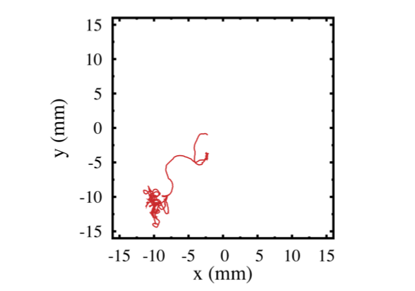
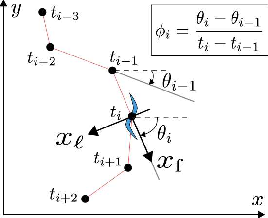

線虫の移動行動に見られるべき則
キーワード：脳・神経，線虫，ランダム・ウォーク，走性，べき則，乗算ノイズ
[Ohkubo, Yoshida, Iino, Masuda. J Theor Biol (2010); 数学セミナー 2010 年 12 月号にも関連記事]
線虫は，体長 1 ミリ程度の土壌生物である．302 個の各ニューロンの役割をかなり調べられる，遺伝子操作がしやすい，より複雑な動物と遺伝子の相同性があるなどの理由から，線虫は研究材料として用いられる．
線虫の移動行動は複雑である．具体的には，緩やかにカーブしながら進むことと，時折急激な方向転換を行うことを織り交ぜながら進み，例えば餌の濃度が高い位置へ向かって行く（図左）．後者の「急激な方向転換」については，その統計的性質などがよく調べられている．一方，前者の「緩やかにカーブしながら進む」ことについては，好きな化学物質の濃度が高い側に徐々に曲がっていく風見鶏機構の存在を除いては，よくわかっていなかった．
そこで，「緩やかにカーブしながら進む」部分について，実験データの解析を行った．特に，線虫が曲がる速さ（図右）の統計を調べた．その結果，単位時間で曲がる大きさの分布は，べき分布であることがわかった．多くのときは曲がる度合いが小さくて直線的に進み，大きめに曲がるときが時折，しかし，それなりの頻繁で起こる，ということである．曲がる大きさは正規分布に従わないのである．べき分布は，「急激な方向転換」を線虫の軌道から除去した残りのデータについても見られる．
このようなべき分布は，線虫が古典的なランダム・ウォークを行うと仮定すると説明できない．我々は，べき則を伴う線虫の移動行動を，乗算的なノイズを受けるランダム・ウォークによって数理モデル化した．生成された軌道は，実際の線虫の軌道と類似していた．この数理モデルでは，移動するために生成される力が，力の大きさに比例した大きさのノイズを伴う．実際の線虫にもこのような比例関係が存在する可能性が示唆される．
 |
 |
| （左）線虫の移動行動の軌跡．（右）線虫が曲がる速さの定量化 | |